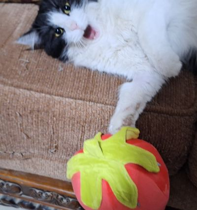
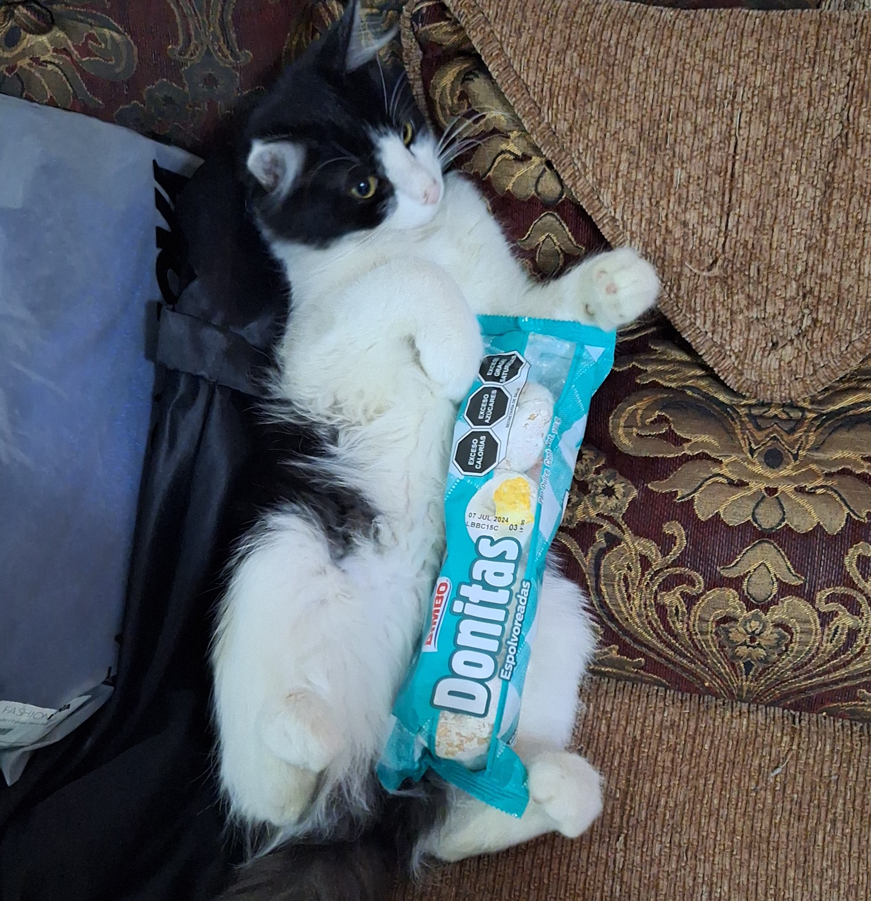
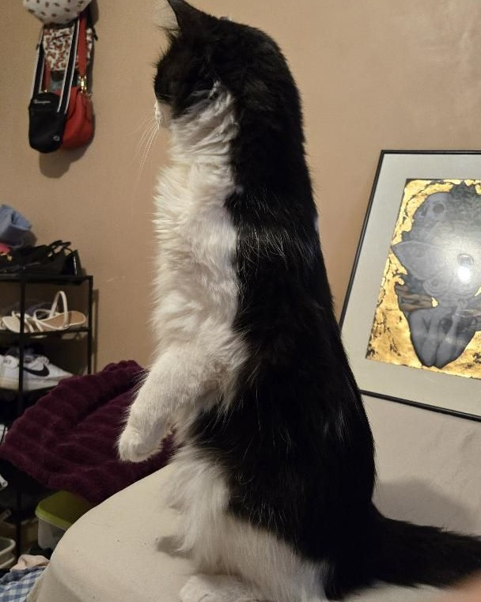

Bruno the Tuxedo Cat
A little collection of the most hilarious pictures
of Bruno, the awesome cat!


- Bruno is a Mexican guy from Sinaloa.
- Loves Chuchurus like his personal catnip.
- Bruno can stand on his two feet!
🍓 Explore Tuxedo Cats 🍓